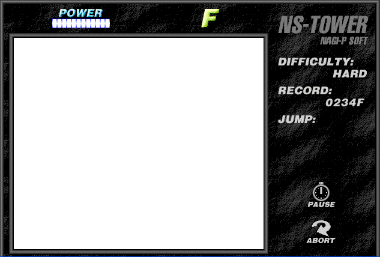

Hold spacebar to charge for a jump, and release to perform the jump. To start a new game after a death, either refresh the page or click the "Abort" button. The "pause" button works. If the game doesn't load properly, try refreshing. Requires Firefox 1.5